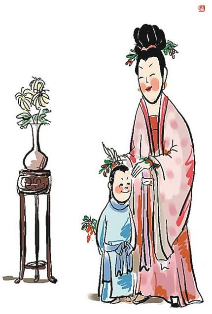

重阳节为什么要佩茱萸
古代风行九九插茱萸的习俗，所以又叫做茱萸节。茱萸入药，可制酒养身祛病。古人把山茱萸作为祭祀、避邪之物，传说中战国时期的楚王妃曾经佩戴茱萸首饰，于重阳日登高畅游，插茱萸枝、佩茱萸囊、饮茱萸酒、吟茱萸诗，极尽欢娱之乐。
重阳节插茱萸的风俗，在唐代就已经很普遍。古人认为在重阳节这一天插茱萸可以避难消灾；或佩带于臂，或作香袋把茱萸放在里面佩带，还有插在头上的。大多是妇女、儿童佩带，有些地方，男子也佩带。重阳节佩茱萸，在晋代葛洪《西经杂记》中就有记载。
文人们于重阳结伴出外登高赏茱萸，尤其在唐代，白居易、杜甫、寒山等几十位诗人均有吟唱重阳登高及插茱萸的诗。最为脍炙人口的是王维的《九月九日忆山东兄弟》，诗曰：“遥知兄弟登高处，遍插茱萸少一人。”
茱萸是一种中草药，常绿小乔木，树几乎可以长到一丈多高，叶为羽状复叶，初夏开绿白色的小花，结实似椒子，秋后成熟，果实嫩时呈黄色，成熟后变成紫红色。茱萸香味浓，有驱虫祛湿、逐风邪的作用，并能消积食，治寒热。
山茱萸又叫山萸肉、山芋肉，这个名称最早出现在《神农本草经》中。在民间，关于山茱萸的名称由来还有一段传说。相传战国时期赵王有颈椎病，颈痛难忍，一位姓朱的御医用一种干果煎汤给赵王服用，很快使赵王解除病痛。而后赵王问朱御医用了什么灵丹妙药，朱御医回答是山萸果，如若坚持服用，不但可治愈颈椎疼痛，还可安神健脑、清热明目。赵王听后大喜，令人大种山萸。为了表彰朱御医的功绩，就将山萸更名为山朱萸，后演变为茱萸。
重阳节为什么要插茱萸？民间认为九月九日也是逢凶之日，多灾多难，所以在重阳节人们喜欢佩带茱萸以辟邪求吉。茱萸因此还被人们称为“辟邪翁”。重阳日，采摘它的枝叶，连果实用布缝成一小囊，佩带身上，可用来避除邪恶之气。
重阳节佩茱萸的寓意
插茱萸是旧时汉族民间节日风俗，流行于黄河中下游、淮河、长江流域等地。每年农历九月初九重阳节时，民间采茱萸插戴头上，亦有用茱萸制成囊佩带的。那么重阳节插茱萸的意义是什么呢？
茱萸属芸香科植物，分布于长江流域和华南一带。茱萸苦辛性温，功在温中、行气、止痛。茱萸对呕吐吞酸、腹痛泻痢均有奇效。茱萸外用对高血压、慢性消化不良、口腔溃疡等病也有一定的疗效。
茱萸是一味中药，分吴茱萸和山茱萸。《中国药学大辞典》解释，本品南北皆可，入药以“吴地”为佳，所以又称吴茱萸。以前有人认为“遍插茱萸少一人”中的茱萸是山茱萸，实为张冠李戴。山茱萸虽为传统中药，有滋补益精的功效。
重阳节与茱萸的关系，最早见于《续齐楷记》中的一则故事：汝南人桓景随费长房学道。一日，费长房对桓景说，九月九那天，你家将有大灾，其破解办法是叫家人各做一个彩色的袋子，里面装上茱萸，缠在臂上，登高山，饮菊酒。九月初九这天，桓景一家人照此而行，傍晚回家一看，果然家中的鸡犬牛羊都已死亡，而全家人因外出而安然无恙。
当然以上故事可能只是一个传说，但茱萸“辟邪祈福、消祸求平安”的寓意却流传了下来，后世人们在重阳节的时候，采集结了果子的茱萸，或置于布囊中佩挂在手臂上，或插戴在头上，以祈福消祸求平安，并给了茱萸“辟邪翁”的雅号。
重阳节插茱萸的传说
重阳节插茱萸与一个传说有关，相传在东汉时期，汝河县有个瘟魔，只要它一出现，就家家有人病倒，天天有人丧命，那一带的百姓受尽了瘟魔的蹂躏，人心害怕却又毫无办法。一场瘟疫夺走了青年恒景的父母，他自己也因病差点儿丧了命。
病愈之后，恒景决心除魔，于是辞别心爱的妻子和父老乡亲，出去访仙学艺，以除瘟魔。他四处访师寻道，访遍天下名山高士，终于打听到东方有一座最古老的山上，住着一位法力无边的仙长，叫费长房。
经过遥远的路途和艰辛跋涉，恒景终于找到了那座高山，并见到了有着神奇法力的仙长。听恒景说明来由后，仙长费长房被他的精神所感动，答应收他为徒，并教给他降妖剑术，还赠他一把降妖除魔的青龙剑。
之后，恒景废寝忘食，不分白天黑夜地加以练习，终于练就了一身的非凡武艺。一天，仙长把恒景叫到跟前，说：“明天是九月初九，瘟魔又要出来作恶，你本领已经学成，应该回去为民除害了”。仙长送给他一包茱萸叶，一盅菊花酒，并密授避邪用法，让恒景骑着仙鹤赶回家去。回到家乡后，恒景按仙长的叮嘱，在九月初九的早晨把乡亲们领到附近一座山上，发给每人一片茱萸叶，一盅菊花酒，做好了降魔的准备。
中午时分，随着几声怪叫，瘟魔冲出汝河，意欲祸害人间。瘟魔刚扑到山下，突然闻到阵阵茱萸奇香和菊花酒气，便戛然止步，脸色突变，这时恒景手持青龙剑追下山来，几个回合就把瘟魔刺死了。从此以后，九月初九登高插茱萸避疫的风俗便年复一年地流传下来。
有人分析认为，从节俗的原始意义看，茱萸与登高的结合应该是最早的。但是在宋元之后，佩茱萸的习俗逐渐稀见了。其变化的因由大概要从重阳节俗的重心的迁移中去理解。
重阳在早期民众的实践生活中强调的是避邪消灾，随着人们生活状态的改善，人们不仅关注目前的现实生活，而且对未来生活给予了更多的期盼，祈求长生与延寿。所以“延寿客”（菊花）的地位最终盖过了“避邪翁”（茱萸）。
重阳节的茱萸怎么佩戴
从避祸避灾到祈福祈寿的文化心理变迁，从重阳节的两个民俗事象——茱萸、菊花——也可以得到反映。茱萸是一种药用植物，常绿小乔木，秋天会结成熟后呈红紫色的、气味辛香的小果实。人们采集这结了果子的茱萸，或置于布囊中佩挂在手臂上，或插戴在头上，并给了茱萸“辟邪翁”的雅号。
除此之外，“簪菊”的习俗也很普遍，如杜牧诗歌《九日齐山登高》中所言“菊花须插满头归”。菊花又名“延寿客”、“不老草”。插茱萸与登高的结合，比簪菊要早。但宋元之后，佩茱萸之风渐少，簪菊之风日盛。
“辟邪翁”与“延寿客”，同样是对于生命的追求，但两者的意义指向有所不同。插茱萸，是出于对疾病灾祸的恐惧寻求躲避消解，指向当下；簪菊花，是随着生活状况的改善、对现实世界把握度的上升，更多指向对于未来的祈盼，希望长寿延年，将来的生活幸福美满。“延寿客”的地位最终盖过“辟邪翁”，正是基于这样一种逻辑的演变，而从“登高节”发展到“敬老节”，同样基于此。